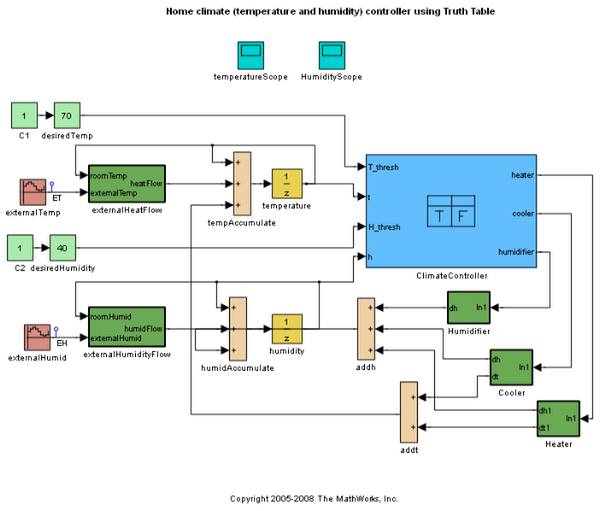

Truth-Table ブロックを使った家の環境制御
Copyright 2007 The MathWorks, Inc.
Published with MATLAB® 7.11
MATLAB and Simulink are registered trademarks of The MathWorks, Inc. Please see www.mathworks.com/trademarks for a list of other trademarks owned by The MathWorks, Inc. Other product or brand names are trademarks or registered trademarks of their respective owners.